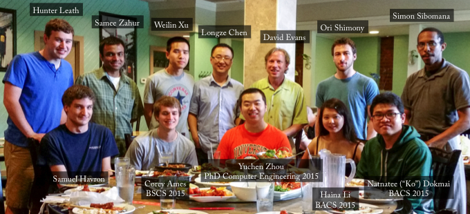

Our research seeks to empower individuals and organizations to control
how their data is used. We use techniques from cryptography,
programming languages, machine learning, operating systems, and other
areas to both understand and improve the security of computing as
practiced today, and as envisioned in the future.
 Security Research Group Lunch (12 December 2017)
Security Research Group Lunch (12 December 2017)
Haina Li,
Felix Park,
Mainuddin
Jonas,
Anant Kharkar,
Faysal Hossain Shezan,
Fnu Suya,
David Evans,
Yuan Tian,
Riley Spahn,
Weilin Xu,
Guy "Jack" Verrier
Everyone is welcome at our research group meetings. To get
announcements, join our Slack
Group (any @virginia.edu email address can join themsleves,
or email me to request an invitation).
Projects
News
8 November 2015
I gave a talk at Johns Hopkins University for the DC-Area Crypto Day focused on cryptocurrencies: Trick or Treat?: Bitcoin for Non-Believers, Cryptocurrencies for Cypherpunks.
Video of the Entire Workshop
Great to include two recent alums, Alex Kuck and Nick Skelsey at the end of my talk. They talks about progress with Ombuds, a platform for free speech built on the blockchain.
marginheight="0" scrolling="no" style="border:1px solid #CCC; border-width:1px 1px 0; margin-bottom:5px; max-width: 100%;"allowfullscreen>
Download slides: [PPTX (35 MB), PDF (4-up, 34MB)]
Posted in Conferences, Cryptocurrency, Cryptography, Talks | Comments Off
31 August 2015
Atlas Obscura has an article about Karsten Nohl (PhD 2009):
Exit Interview: I’m A Crypto-Specialist Working To Secure the Internet For A Billion People, Jeremy Berke, 28 July 2015.
One of the things we’re building is a PayPal competitor–with a modest target of having a few hundred million customers. Everything in India is always on a massive scale. If you could get rid of PayPal passwords, and instead just have a fingerprint–if you could pay for goods at a store with just your fingerprint, that would simplify people’s lives a lot. It would also have the secondary effect of saving some of the security problems, like phishing, that we currently encounter. And this government database is a huge enabler.
If we already have a mandate to collect everybody’s fingerprints, why not use it in the customer’s benefit? The privacy risk is always there. That’s the law and I can’t argue with that. But if the law is already creating this risk, why not create opportunity in the same step?
Posted in Alumni, News, Privacy, Research, Security, USB | Comments Off
15 August 2015
I gave a talk at the USENIX Security Forum for new researchers on “How to Live in Paradise: A Guide for New and Disgruntled Professors” (reprising a similar talk I gave last year).
This website includes text expanding on the talk and a video of last year’s version.

Posted in Conferences, Talks | Comments Off
5 June 2015
I went to a very interesting meeting at Darmstadt: CROSSING – Where Quantum Physics, Cryptography, System Security and Software Engineering meet. Lots more diversity than my typical computer security meeting, including a lively debate on quantum physics and superfluid vacuum theory between Nicolas Grisin (founder of ID Quantique and Ross Anderson. Interesting to learn that China is building a huge quantum key distribution network.
I gave a talk on Multi-Party Computation for the Masses:
CROSSING is a 12-year project funded by the German Science Foundation (with reviews every 4 years). Gives some context to US funding agencies that talk about long-range visionary projects with 5-year timelines.
Posted in Conferences, Cryptography, Research, Secure Computation, Security, Talks | Comments Off
24 May 2015
Several SRGers were at IEEE Symposium on Security and Privacy (“Oakland” in San Jose).
Yuchen Zhou presented his work on Understanding and Monitoring Embedded Web Scripts. Yuchen graduated with his PhD the day before the conference, and will be joining Palo Alto Networks.
Samee Zahur is a co-author (along with Benjamin Kreuter, who is an “in-progress UVa PhD student” diverted by Google, and several researchers from Microsoft Research) on the paper, Geppetto: Versatile Verifiable Computation, which was presented by Bryan Parno.
Samee also presented a poster on Obliv-C.
Weilin Xu presented a poster on Automatically Evading Classifiers
It was also great to see SRG alums Yan Huang (who is not at Indiana University, and was a co-author on the paper about ObliVM), Jon McCune (who is now working on trusted computing at Google) and Adrienne Felt (who was the keynote speaker for the W2SP workshop, and gave a very interesting talk about user-facing security design and experiments in Google Chrome; Adrienne’s first paper was in W2SP 2008 when she was an undergraduate at UVa).
Posted in Alumni, Conferences, Papers, Program Analysis, Research, Secure Computation, Security, Talks, Web Security | Comments Off
6 May 2015

SRG Graduates Lunch, 6 May 2015
Posted in Alumni, Pictures | Comments Off
30 April 2015
Samee Zahur won the Computer Science Outstanding Graduate Research Award, our department’s annual award for the most outstanding graduate student. Congratulations to Samee on the much-deserved award! (Unfortunately, Samee wasn’t present to receive the award since he is in Sofia presenting his half gates work at Eurocrypt 2015.)
Posted in Awards | Comments Off
14 April 2015
Yuchen Zhou successfully defended his PhD thesis on Improving Security and Privacy of Integrated Web Applications! The dissertation was approved by his committee: Shuo Chen (Microsoft), Joanne Dugan, Kevin Sullivan, Westley Weimer, and Ronald Williams.
Congratulations to Yuchen Dr. Zhou!
Libra Link: Improving Security and Privacy of Integrated Web Applications.
Posted in Research, Web Security | Comments Off
26 March 2015
Modern web applications make frequent use of third-party scripts, often in ways that allow scripts loaded from external servers to make unrestricted changes to the embedding page and access critical resources including private user information. Our paper describing tools to assist site administrators in understanding, monitoring, and restricting the behavior of third-party scripts embedded in their site, and what we’ve learned by using them, is now available: Yuchen Zhou and David Evans, Understanding and Monitoring Embedded Web Scripts, IEEE Symposium on Security and Privacy 2015.
Yuchen will present the paper at the Oakland conference (in San Jose) this May.

Project Site: ScriptInspector.org
Posted in Conferences, Papers, Privacy, Program Analysis, Research, Security, Web Security | Comments Off
25 March 2015
This (perhaps somewhat oversensationalized) article in Slate draws from Nate Paul’s research on medical device security: If you Die after Someone Hacks Your Glucose Monitor Who Does the Autopsy? (Slate, 13 March 2015).
According to researchers at the Oak Ridge National Laboratory, in 2003 and 2009 respectively, the “Slammer” and “Conficker” worms had each successfully infected networked hospital systems responsible for monitoring heart patients. Since the days of Slammer and Conficker, malware has since become even more sophisticated, and a Trojan with a specifically engineered piece of malicious code, could cause harm to numerous patients around the world simultaneously.
While a small community of researchers, and even some government regulators, such as the FDA and FTC, have begun to pose important questions about the privacy and security implications of incorporating computer technology into biological systems, so far law enforcement and criminal justice authorities have been mostly absent from any substantive conversations.
Posted in Medical Devices, Privacy, Research, Security | Comments Off


{kind=link}